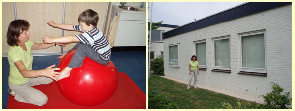

|
Graag stel ik me aan u voor.
Ik ben Toke van der Ploeg, in januari 2002 ben ik deze praktijk voor kinderfysiotherapie in Pijnacker gestart.
Ter plaatse ben ik goed bekend, want ik ben hier geboren en getogen en het is heel leuk om me nu via de kinderfysiotherapie in te zetten voor de jeugdgezondheidszorg in Pijnacker.
Als kinderfysiotherapeute werk ik graag samen met schoolartsen en consultatiebureau-artsen om zo een bijdrage te leveren aan het optimaal functioneren van kinderen, van baby’s, kleuters en kinderen van de basisschool tot en met jongeren in het voortgezet onderwijs.
Daarnaast werk ik op verwijzing van huisartsen en specialisten.
Ouders kunnen echter ook rechtstreeks naar de kinderfysiotherapeut gaan. Sinds begin 2006 vergoeden de zorgverzekeraars ook behandelingen zonder verwijzing van de huisarts.

Opleiding:
Allereerst heb ik de basisschool gevolgd in Pijnacker, vervolgens heb ik het atheneumdiploma behaald op het Sint Laurenscollege in Hillegersberg.
De vier-jarige opleiding voor fysiotherapie heb ik in Rotterdam en Breda gevolgd, later heb ik de opleiding voor kinderfysiotherapie gevolgd (drie jaar) en sinds 1998 ben ik als kinderfysiotherapeute geregistreerd bij het NVFK, een onderafdeling van het genootschap voor fysiotherapie , speciaal voor kinderfysiotherapeuten.
Vanaf 1998 heb ik aanvullende cursussen gevolgd, o.a. voor babymassage en schrijfmotoriek. Ook leer ik steeds nieuwe test- en meetmethodes, zoals onlangs nog een methode om afplattingen bij babyhoofdjes goed te kunnen meten.
Werkervaring:
Ik heb inmiddels als kinderfysiotherapeute veel werkervaring.
Als kinderfysiotherapeute heb ik vier jaar op een algemeen ziekenhuis gewerkt (klinisch en poliklinisch) en twee jaar op een kinderrevalidatiecentrum. Met veel ernstige aandoeningen, zoals cerebrale parese, spierziektes (o.a. Duchenne spierdystrofie) en spina bifida heb ik praktijkervaring opgedaan in het revalidatiecentrum.
In het ziekenhuis ging het meer om begeleiding van kinderen in de couveuse en vervolgens in de poliklinische situatie het begeleiden en bevorderen van een goede motorische ontwikkeling.
Uiteraard kreeg ik in het ziekenhuis ook te maken met nabehandelingen van fracturen en operaties bij kinderen.
Vervolgens heb ik nog tien jaar als kinderfysiotherapeute in de eerste lijn gewerkt in samenwerking met een manueel therapeut. Door regelmatig samen kinderen te bekijken en te bespreken leer je veel van elkaars visie en kennis.
Door deze werkervaring heb ik voldoende vertrouwen gekregen om mijn praktijk in Pijnacker te starten.
|